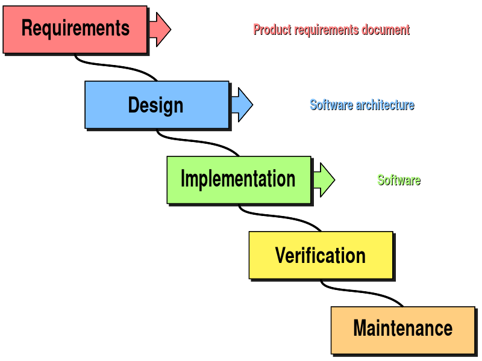
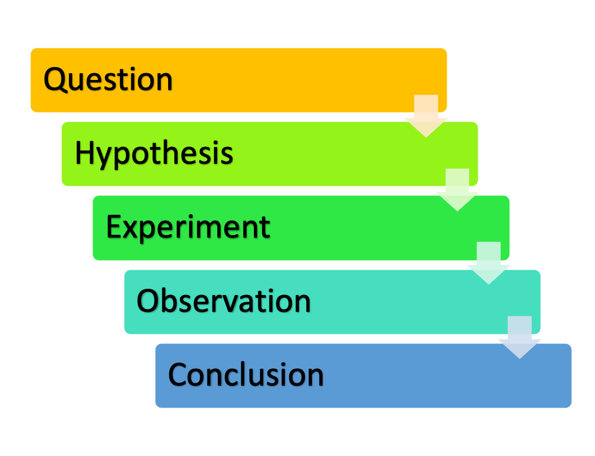
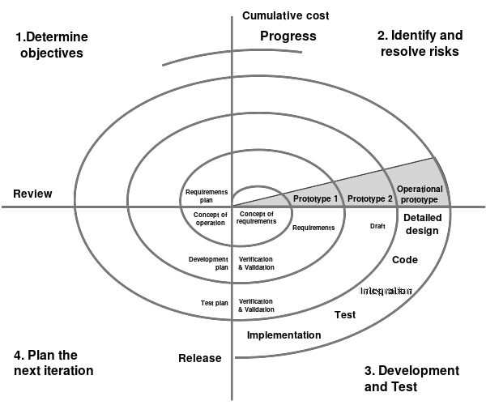
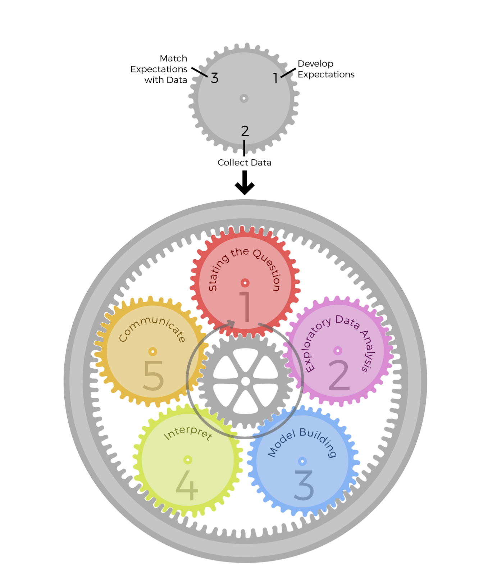

Chapter 7 Exploratory Data Analysis
This book is about exploratory data analysis, about looking at data to see what it seems to say. It concentrates on simple arithmetic and easy-to-draw pictures. It regards whatever appearances we have recognized as partial descriptions, and tries to look beneath them for new insights. Its concern is with appearance, not with confirmation. Tukey (1977) v
- Exploratory Data Analysis (EDA) is “an attitude, AND a flexibility, AND some graph paper (or transparencies, or both)” (Tukey 1980) developed by statistician John Tukey
7.1 Exploratory and Confirmatory Research
- Especially in the wake of the replication crisis, one common distinction is between exploratory and confirmatory research (Wagenmakers et al. 2012)
| Confirmatory | Exploratory |
|---|---|
| hypothesis testing | hypothesis development |
| specified in advance | adaptable |
| algorithmic | free, creative |
| avoids inferential errors (type I, false positives) | makes errors? |
| rigorous | lacking rigor? |
| real science?? | h*cking around with data?? |
7.2 Better Models for EDA I: Risk Management in Spiral Development


Figure 7.1: The waterfall model of software development resembles the elementary school model of “the scientific method,” with an inflexible, linear sequence of predefined steps. Source: https://en.wikipedia.org/wiki/Waterfall_model

Figure 7.2: Boehm’s spiral model of software development, based on Boehm (1988), fig. 2. Source: https://en.wikipedia.org/wiki/Spiral_model
- Through the 1970s, software engineering relied on a “waterfall model” of development
- Resembles elementary school picture of “the scientific method”: linear sequences of steps, specified in advance
7.2.1 Boehm (1988)’s “spiral model”
- Critique: The waterfall model required extensive advance planning
- Couldn’t be adapted as new problems were identified or requirements changed
- Basic idea: Software development works in an expanding spiral, moving from low-cost, low-risk proof of concept to usable demonstration to full product
- Define outputs concurrently, not sequentially
- 4 basic activities in each cycle
- Identify win conditions for all stakeholders
- Identify and evaluate alternative approaches
- Identify and resolve risks for each approach
- Obtain approval and commitment from all stakeholders
- Risk determines level of effort
- Risk determines degree of details
- Use anchor point milestones
- Is there a sufficient definition of a technical and management approach to satisfying everyone’s win conditions?
- Is there a sufficient definition of the preferred approach to satisfying everyone’s win conditions, and are all significant risks eliminated or mitigated?
- Is there sufficient preparation of the software, site, users, operators, and maintainers to satisfy everyone’s win conditions by launching the system?
7.2.2 Academic science in terms of the spiral model
- Start small: pilot study, subset of big data
- Stakeholders
- PI, grad researchers, undergrad researchers
- Dissertation committee, advisor; tenure committee
- Journal editors and reviewers, funding agency, hiring committees
- Community partners? Policymakers? Industry?
- EDA: Identify and mitigate risks before you fully commit to an approach
- Do these data include the main variables we care about?
- How about additional covariates, predictors, identifiers we need?
- Where are the data errors? Can we fix them?
- Where are the missing values?
7.3 Better Models for EDA II: Epicycle of Analysis

Figure 7.3: Epicycle of analysis model, Peng and Matsui (2016), 5
- Peng and Matsui (2016)
- Data analysis is organized into 5 activities
- Each activity involves the same 3-step “epicycle” process
- Develop expectations
- Collect information
- Compare and revise expectations
- Not “the scientific method”! (Peng and Matsui 2016, 4)
- “Highly iterative and non-linear”
- "information is learned at each step, which then informs
- whether (and how) to refine, and redo, the [previous] step …, or
- whether (and how) to proceed to the next step."
| Goals of EDA | Epicycle step |
|---|---|
| Determine if there are problems with the data | 2. Collecting information |
| Determine whether our question can be answered with these data | 3. Comparing and revising expectations |
| Develop sketch of an answer | 1. Developing expectations |
7.4 Better Models for EDA III: Developing Phenomena
- Bogen and Woodward (1988)
- data
- observed
- not explainable (because of random error and idiosyncracies of data collection)
- local to a time, place, sample, data collection procedure
- provide evidence for phenomena
- example: a spreadsheet of numbers, downloaded from Qualtrics
- phenomena
- not observed
- constructed using techniques for data analysis
- explainable by theories
- stable over a broader or narrow range of times, places, samples, procedures
- provide evidence for theories
- don’t explain anything
- example: correlation between partisan identification and sharing covid misinformation
- theories
- not observed
- constructed to explain phenomena
- might explain deductively (eg, some parts of physics)
- or might enable a “detailed tracing of the causal mechanisms responsible for the facts to be explained” (324)
- stable over a broader or narrow range of times, places, samples, procedures
- example: conservative messaging -> anxiety -> susceptibility to conspiracy theories
- data
- EDA as developing phenomena
- starting to mitigate random error and idiosyncracies
- identifying local patterns (“local phenomena”)
- not yet claiming these will be stable and appear elsewhere
- not yet worrying (much) about explanations
7.5 Discussion questions
- For each of these models, how well do they fit the way you’ve been taught to do science? How do they challenge the way you’ve been taught to do science?
References
Boehm, B. W. 1988. “A Spiral Model of Software Development and Enhancement.” Computer 21 (5): 61–72. https://doi.org/10.1109/2.59.
Bogen, James, and James Woodward. 1988. “Saving the Phenomena.” The Philosophical Review 97 (3): 303–52. http://www.jstor.org/stable/2185445.
Peng, Roger D., and Elizabeth Matsui. 2016. The Art of Data Science: A Guide for Anyone Who Works with Data. Leanpub. http://leanpub.com/artofdatascience.
Tukey, John W. 1980. “We Need Both Exploratory and Confirmatory.” The American Statistician 34 (1): 23–25. https://doi.org/10.1080/00031305.1980.10482706.
Tukey, John Wilder. 1977. Exploratory Data Analysis. Addison-Wesley Series in Behavioral Science. Reading, Mass: Addison-Wesley Pub. Co. https://archive.org/details/exploratorydataa00tuke_0.
Wagenmakers, Eric-Jan, Ruud Wetzels, Denny Borsboom, Han L. J. van der Maas, and Rogier A. Kievit. 2012. “An Agenda for Purely Confirmatory Research.” Perspectives on Psychological Science 7 (6): 632–38. https://doi.org/10.1177/1745691612463078.